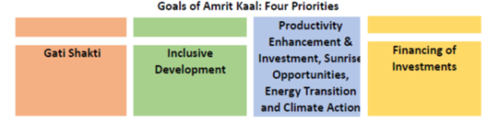

Ministry of Finance
Union Budget 2022-23: Highlights
Relevant to all Mahindra Group Businesses
Overview
-
Presenting the Union Budget 2022, Finance Minister Ms. Nirmala Sitharaman set out the vision for India@100 to lay the foundation for the next 25 years in the lead up to India’s 100 years of independence. During this period, the government envisions to:
-
Compliment macro-economic growth with a micro-economic welfare.
-
Promote digital economy and financial technology enabled development, energy transition and climate action; and,
-
Rely on virtuous cycle of investment requiring public investment to crowd in private investment.

-
The Finance Minister highlighted that India’s economic growth is estimated to be at 9.2 percent in current year, the highest amongst large economies. Showing commitment for ‘minimum government and maximum governance’ and to further enable Ease-of-Doing-Business (EODB), over 25,000 compliances were reduced, and 1486 Union laws were repealed in the recent years. Over the next 25 years, the Finance Minister committed to launch the next phase of Ease of Doing Business 2.0 and Ease of Living.
-
Outlay for capital expenditure in the union budget was increased by 35.4 percent from Rs 5.54 lakh crore (approx. $ 74.1 billion) in the current year to Rs 7.5 lakh crore (approx. $ 100 billion) in 2022-23. Combining this with the provision made for creation of capital assets, the effective capital expenditure is estimated at Rs 10.68 lakh crore (approx. $ 142 billion) approx. 4.1 percent of the GDP.
-
Coming to the budget estimates, the total expenditure in 2022-23 is estimated at Rs 39.45 lakh crore (approx. $ 526 billion), while the total receipts other than borrowings are estimated at Rs 22.84 lakh crore (approx. $ 305.5 billion). The revised fiscal deficit in the current year is estimated at 6.9 percent of GDP as against 6.8 percent projected in the budget estimates. The fiscal deficit in 2022-23 is estimated at 6.4 per cent of GDP.
Sectoral Highlights
Technology
-
To facilitate credit availability for digital infrastructure and clean energy storage, data centres and energy storage systems including dense charging infrastructure and grid-scale battery systems will be included in the harmonized list of infrastructure.
Digital Economy
-
Digital Rupee: The government proposed introduction of Digital Rupee using blockchain by the Reserve Bank of India starting 2022-23.
-
Digital Banking: Setting up of 75 digital banking units in 75 districts by scheduled commercial banks.
-
Digital Payments: Financial support announced in 2021-22 budget to continue.
-
Digital Ecosystem for Skilling and Livelihood,
‘Desh-Stack e-portal’
will be launched to provide online skilling.
Telecom
-
Roll out of 5G services by private sector players and Spectrum auction to be held by Mid- year.
-
Optical fibre in all villages in Public Private Partnership model to be completed by 2025 and roll out in 2022-23.
-
Scheme for design led manufacturing to be launched to build a strong ecosystem for 5G as part of the Production Linked Incentive Scheme.
-
Five percent of annual collections under the Universal Service Obligation Fund (USOF) will be allocated to enable affordable broadband and mobile service proliferation in rural and remote areas.
-
Contracts for laying optical fibre in rural and remote areas will be awarded under the Bharat net project through Public Private Partnership in 2022-23.
Education
-
‘One class-one TV channel’ program of PM e-VIDYA (e-knowledge) will be expanded from 12 to 200 TV channels. This will enable all states to provide supplementary education in regional languages for classes 1-12.
-
750 virtual labs in science and mathematics, and 75 skilling e-labs for simulated learning environment to be set up.
-
A Digital University will be established to provide students with world class quality education with personalized learning experiences, in different regional languages.
Emerging Technologies
-
Light touch regulations, actions to build domestic policies and promotion of R&D will guide the government’s approach in the areas of artificial intelligence, geospatial systems, drones, semiconductor and its eco-system, space economy, genomics and pharmaceuticals, green energy, and clean mobility systems.
Green Initiatives
-
Promote use of public transport in urban areas complemented by clean technology and special mobility zones with zero fossil fuel policy and use of electric vehicles.
-
The government will bring out a battery swapping policy and formulate inter-operability standards and will encourage the private sector to develop business models for ‘Battery / Energy as a Service’.
-
In solar power, the government will provide additional allocation of Rs 19,500 crore (approx. $2.6 billion) for Production Linked Incentives to facilitate domestic manufacturing across the solar value chain.
-
Four pilot projects for conversion of coal to gas and chemicals will be set up to evolve technical and financial viability.
-
The government will issue Green Bonds for mobilizing resources for green infrastructure and the proceeds will be deployed in public sector projects which help in reducing the carbon intensity of the economy.
-
To encourage the efforts for blending of fuel, unblended fuel shall attract an additional differential excise duty of Rs. 2 per litre (approx. 0.27 cents) from 1 October 2022.
Gaming
-
Animation, Visual Effects, Gaming and Comic (AVGC) task force will be set up to come up with ways to build domestic capacity to serve local and global demand.
Unmanned Aerial Vehicles
-
Start-ups will be promoted to facilitate ‘Drone Shakti’ (Drone Power) for providing various application for Drone-As-A-Service (DrAAS).
-
Skilling across states through Industrial Training Institutes (ITIs) will be started.
Start-ups
-
Eligible start-ups established before 31.3.2022 were provided a tax incentive for three consecutive years out of ten years from incorporation. The period of incorporation for eligible start-ups has been extended by one more year, up to 31 March 2023.
Infrastructure
-
PM Gati Shakti (PM Speed Power), a digital platform to bring 16 Ministries for planning, coordination, and implementation of infrastructure connectivity projects, will align 7 areas in the National Infrastructure Pipeline. These include roads, railways, airports, ports, mass transport, waterways, and logistics infrastructure.
-
National highways network to be expanded by 25,000 kilometres and Rs 20,000 crore (approx. $ 2.6 billion) will be mobilized for this purpose.
Housing
-
Rs. 48,000 crore (approx. $ 6.4 billion) has been allocated for completion of 80 lakh (8 million) houses for the identified eligible beneficiaries of PM Awas Yojana.
-
Central government will work with the states for faster approvals and promoting affordable housing.
Urban Development
-
Over the next 25 years, as half of India’s population is estimated to be in urban areas, focus of the government will be on development of tier 2 and 3 cities.
-
The government will form a high-level committee of urban planners, urban economists, and institutions to make recommendations on urban sector policies, capacity building, planning, implementation, and governance.
-
Central level support will be provided to states in the areas of modernization of building bylaws, town planning schemes and transit-oriented development.
-
The government will designate up to five existing academic institutions, with an endowment fund of Rs 250 crore each (approx. $ 33.4 million), across regions as centres of excellence for developing India specific knowledge in urban planning and design.
Logistics
-
An open-source mobility stack organizing seamless travel of passengers will be facilitated.
-
Contracts for implementation of multimodal logistics parks at four locations through public private partnership will be awarded in 2022-23.
Railways
-
The government will develop new products and efficient logistics services for small farmers and SMEs; and integrate postal and railways to provide seamless movement of parcels.
-
Popularization of ‘One-Station-One-Product’ to help local businesses and supply chains.
-
One hundred PM Gati Shakti Cargo Terminals for multimodal logistics to be developed during the next three years.
Agriculture
-
Chemical-free organic farming will be promoted throughout the country and focus will be given to farmers’ land in 5-km wide corridors along the Ganga.
-
Delivery of digital and hi-tech services to farmers with involvement of public sector research.
-
Use of ‘Kisan Drones’ will be promoted for crop assessment, digitization of land records, spraying of insecticides, and nutrients.
Micro Small and Medium Enterprises (MSMEs)
-
Portals of Udyam (enterprise), e-Shram (labour), NCS and ASEEM (limitless) to be interlinked and their scope widened to provide live, organic databases, and G2C, B2C and B2B services.
-
Emergency Credit Line Guarantee Scheme (ECLGS), which provided additional credit to more than 13 million MSMEs, has been extended to March 2023. Its guarantee will be expanded by Rs 50,000 crore to a total cover of Rs 5,00,000 crore (approx. $ 65 billion), with additional amounts earmarked for the hospitality sector.
-
Credit Guarantee Trust for Micro and Small Enterprises (CGTMSE) scheme will be revamped with additional credit of Rs 2 lakh crore (approx. $ 26 billion) for MSMEs and expand employment opportunities.
-
Raising and Accelerating MSME Performance (RAMP) program to be rolled out over 5 years with an outlay of Rs 6,000 crore (approx. $ 802.6 million)
Healthcare
-
National Digital Healthcare Ecosystem to be rolled out.
-
National Tele-Mental Health Program with 23 tele-mental health centres of excellence will be set up.
Woman and Child Development
-
Three schemes namely, Mission Shakti (Mission Power/Empowerment), Mission Vatsalya (Affection), Saksham Anganwadi (Able Playschools/courtyard shelter) and Poshan 2.0 (Nutrition) were launched recently to provide integrated benefits to women and children.
-
200,000 anganwadis (playschool)/courtyard shelter) will be upgraded under the Saksham Anganwadi scheme.
Water
-
Allocation of Rs. 60,000 crore (approx. $ 8.02 billion) has been made with an aim to provide tap water to 3.8 crore (38 million) households in 2022-23.
Defence
-
Committed to domestic manufacturing, the government will earmark 68 percent of the capital procurement budget for domestic industry in 2022-23, up from 58 per cent in 2021-22.
-
25 percent of the defence R&D budget will be opened for industry, start-ups, and academia.
Special Initiatives
-
Implementation of Ken-Betwa Link Project at an estimated cost of Rs 44,605 crore (approx. $5.9 billion) to provide irrigation to 900,800 hectares of farmers land, drinking water supply for 62 lakh (6.2 million) people, 103 MW of hydro and 27 MW of solar power.
-
Detailed project reports of 5 river links - Damanganga-Pinjal, Par-Tapi-Narmada, Godavari-Krishna, Krishna-Pennar and Pennar-Cauvery have been finalized.
-
Vibrant Villages Program to cover villages on the northern border with sparse population, limited connectivity, and infrastructure. Activities under the program include infrastructure development, housing, tourist centres, road connectivity, decentralized renewable energy, direct-to-home access for government and educational channels, and support for livelihood generation.
-
Scope of PARIVESH (Environment), a single window portal for green clearances, will be expanded to provide information to applicants and enable application for all four approvals through a single form, and tracking of the process through Centralized Processing Centre-Green (CPC-Green).
-
Government procurement rules were recently modernized for transparency in criteria and cost in evaluation of complex tenders. Provisions have been made for payment of 75 percent of running bills, mandatorily within 10 days and dispute settlement through conciliation. Further, to reduce payment delays, an end-to-end online e-bill system for procurement will be launched for use by central ministries.
-
For export promotion, Special Economic Zones Act will be replaced with a new legislation to enable states to become partners in ‘Development of Enterprise and Service Hubs’.
-
The government allocated Rs. 1 lakh crore (approx. $ 13 billion) to assist the states in catalyzing overall investments in the economy. These are fifty-year interest free loans are over and above the normal borrowings. The allocation will be used for PM Gati Shakti, PM Gram Sadak Yojana (PM Village Road Plan), digitization of the economy and laws related to town planning.